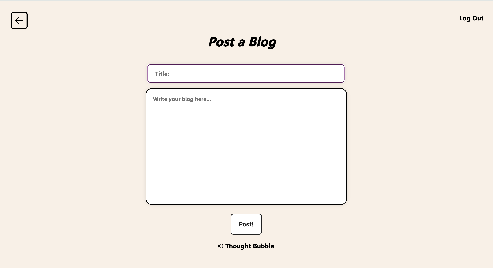
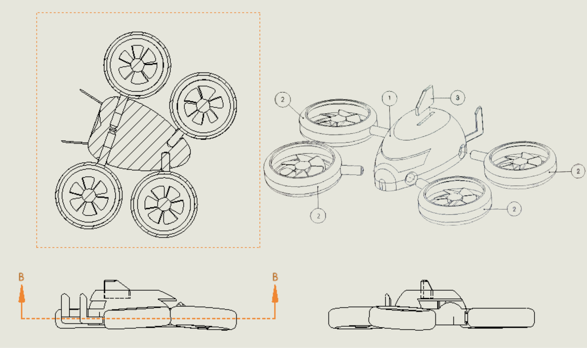
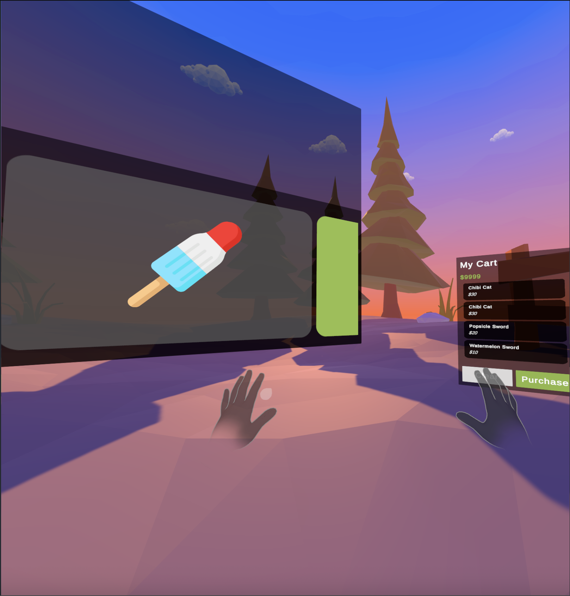

Hello, I'm Alvin
- Currently, I'm contributing alongside a VR design team to implement and develop a real-time text representation pipeline in Unity using the Meta XR SDK and C# scripts to aggregate and describe GameObjects and user perceptions within VR environments.
-
In the past, I:
- Built and trained a CNN for traffic sign recognition using TensorFlow, preprocessing image data with OpenCV and NumPy for consistent input representation.
- Developed a full-stack web-based platform using Python, HTML/CSS, JavaScript, SQL, Jinja, with an enhanced UI that provides an intuitive and responsive interface that allows for user blog management.
Projects

Thought Bubble
Web-based platform with an enhanced UI that allows for user blog management.

Open-ended Vehicle Model
Custom vehicle design modelled using Solidworks. Includes BOM, section view, exploded view, and assembly diagrams.

Roll-A-Ball Game Application
A 3D casual game developed in Unity with C#, incorporating physics, input handling, basic scripting, and an AI-controlled opponent to enhance gameplay.

Hand Gesture Interaction in VR Interface
Utilizing the Meta Software Development Kit and XR Simulator in Unity to enable interactions with VR objects based on hand pose recognitions.

Color Classifier Neural Network Model
Neural network learning model built using PyTorch to classify RGB colors as 'cool' or 'warm' through supervised training and gradiant descent. Leverages fundamental ML concepts and optimal model training practices.

CTraffic Sign Recognition CNN
Neural network model implemented using PyTorch to classify colors through supervised training and gradiant descent.